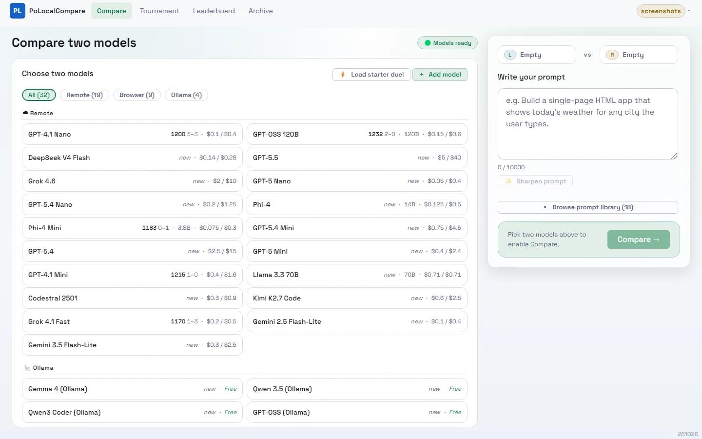
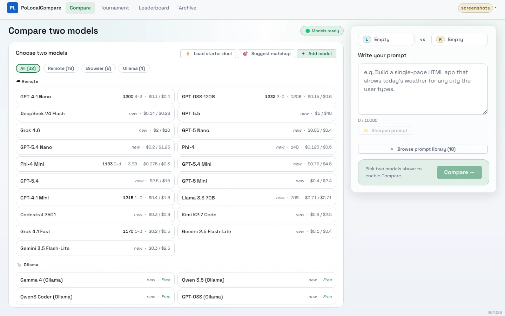
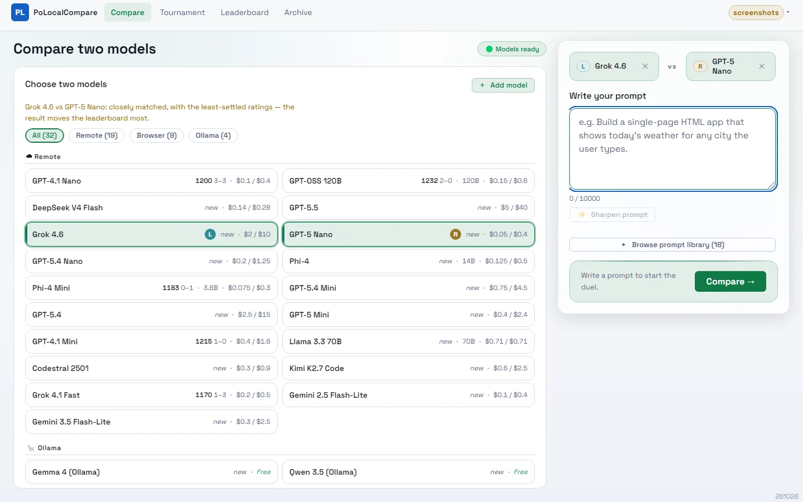
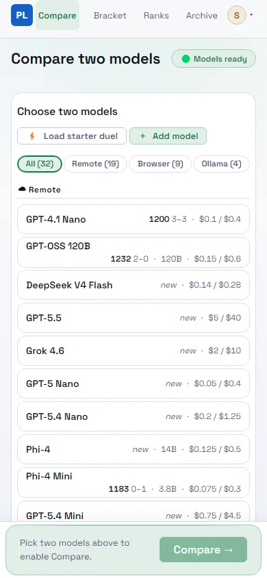
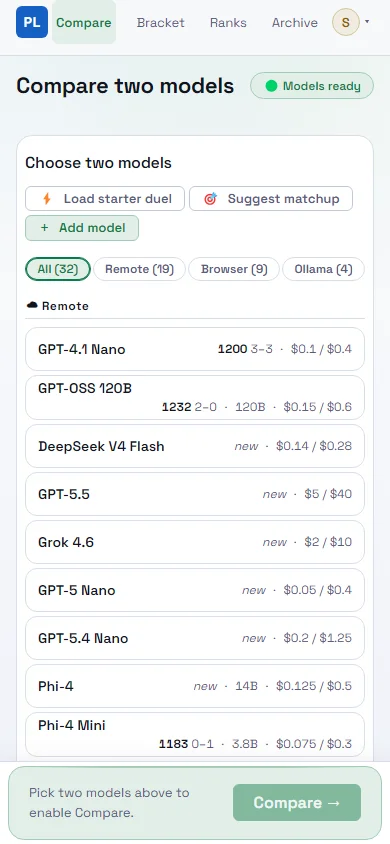
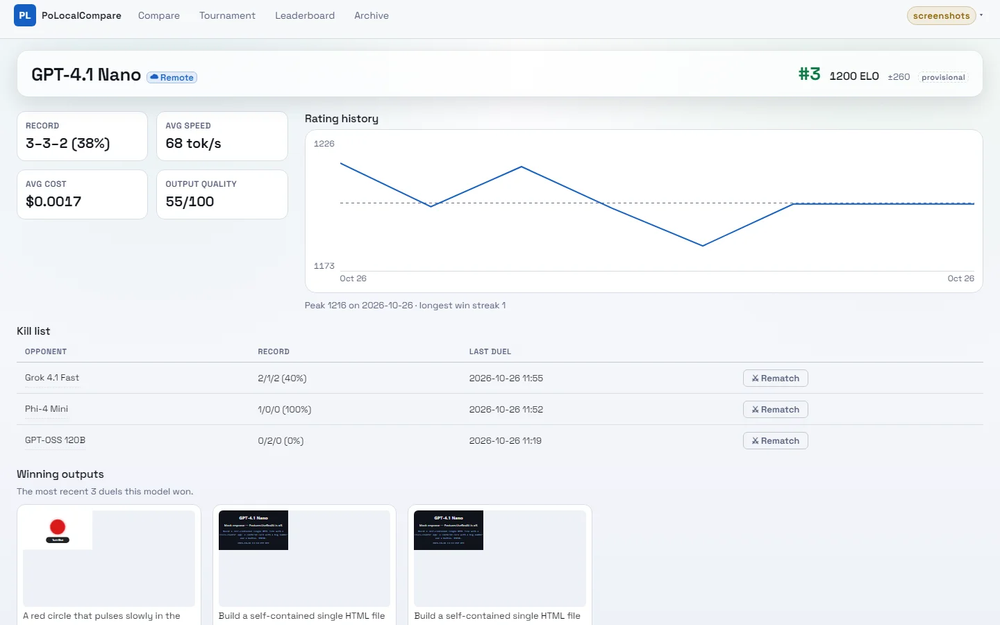
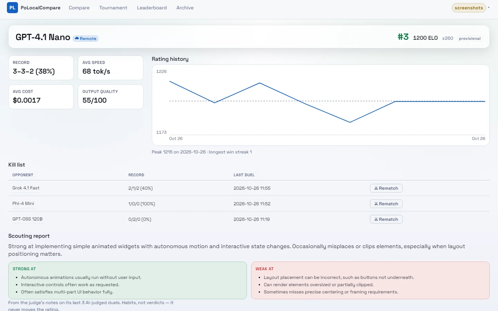
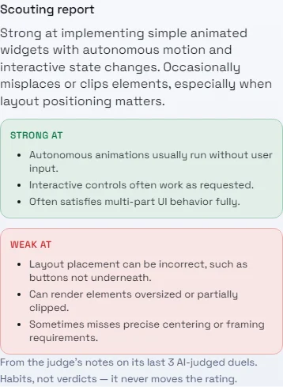
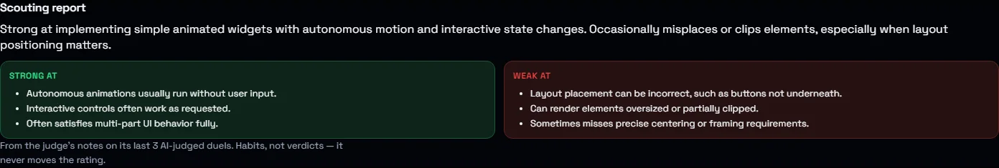

2026-10-26. Captured with Playwright Chromium (headless) against the local app, light theme unless noted, signed in as the dev guest. Desktop shots are 1440×900 viewports, phone shots 390×844. How "before" was made: both UI changes are purely additive, so each "before" is the same live page with the new element hidden in the DOM just before capture — not a build of the previous commit, which would also differ by the uncommitted UI-compaction work.
| Option | Visible change | Where |
|---|---|---|
| A9 — matchups that teach the leaderboard most | "Suggest matchup" / "Suggest opponent" button; the picker's status line says why the pair was chosen | Compare (Home) |
| A10 — scouting report | "Scouting report" section, written from the judge's notes on the model's last 20 AI-judged duels | Model profile (and the leaderboard's embedded profile) |
| A8 / deployment fix | Text only: a remote row on /diag now says "answered, but served by <model> — not the model this entry is named for" | /diag (no screenshot: one string in an existing cell) |
A1–A7 have no UI: the queue, judge, checklist, cross-check, escalation ladder, costs and catalog changes are server-side. The four new catalog entries (Qwen2.5 Coder 3B, Qwen3 4B, Qwen3 Coder and GPT-OSS on Ollama) appear as ordinary rows in the existing picker groups.



Scoring: p(1−p) × (σ²ᵢ + σ²ⱼ) — the Bradley–Terry win
probability from the two strengths, times how unsettled the two ratings are (from the leaderboard's ±N). A
mismatch teaches nothing (the favourite wins); two well-measured models teach little (the ratings barely move).
Logic lives in Shared/Presentation/MatchupPicker.cs and is unit-tested.





